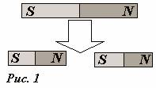
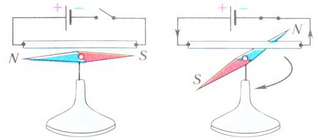
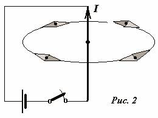

С магнитами, а точнее, с магнетитами (FeO·Fe2O3 – минерал чёрного цвета, обладает сильными магнитными свойствами) человечество знакомо очень и очень давно. Но более-менее серьезные изучения свойств этих минералов начались только в средние века, после серии знаменитых крестовых походов.
Первая публикация о свойствах магнита, которую можно считать научной работой, уносит нас в 1269 год, в военный лагерь армии короля Сицилии Карла Анжуйского, осадившей итальянский город Лусеру. Именно оттуда французский философ и естествоиспытатель Пьер де Марикур отправил приятелю в Пикардию документ, который вошел в историю науки как «Письмо о магните». Марикур указывает, что в каждом куске магнита имеются две области, особенно сильно притягивающие железо. Он усмотрел параллель между этими зонами и полюсами небесной сферы, и поэтому мы теперь говорим о северном и южном магнитных полюсах. Если разбить кусок магнита надвое, пишет Марикур, в каждом осколке появляются собственные полюса (рис. 1). То есть невозможно отделить полюса магнита друг от друга.

Рис. 1. Полюса магнита
После появления книгопечатания труд Пьера де Марикура много раз издавался отдельной брошюрой. Его с уважением цитировали многие натуралисты вплоть до XVII столетия.
С трудами Пьера Марикура был знаком и английский придворный врач Вильям Гильберт. Как врач ее величества, Гильберт увлекался модным на тот период исследованием весьма сомнительного «омолаживающего эффекта малых порций магнита». Именно по этой причине он и занялся изучением свойств магнитов. Он проделал более 600 опытов в свободное от работы время. В 1600 году, уникальном в историческом смысле, вышел его труд «О магните, магнитных телах и большом магните – Земле».
В этой книге Гильберт не только привел практически все известные сведения о свойствах природных магнитов и намагниченного железа, но и описал собственные опыты, например с шаром из магнетита, с помощью которых он воспроизвел основные черты земного магнетизма. Он обнаружил, что на обоих магнитных полюсах такой «маленькой Земли» компасная стрелка устанавливается перпендикулярно ее поверхности, на экваторе – параллельно, а на средних широтах – в промежуточном положении. Так Гильберт смоделировал магнитное наклонение, о существовании которого в Европе знали более полувека. Также Гильберт обнаружил, что сильно нагретое железо теряет магнитные свойства, но при охлаждении они восстанавливаются.
И наконец, Гильберт первым провел четкое различие между притяжением магнетита и притяжением натертого янтаря, которое он назвал электрической силой (от латинского названия янтаря electrum). Он развел «по углам» электричество и магнетизм.
Поэтому, несмотря на то, что это был чрезвычайно новаторский труд, по достоинству оцененный и современниками, и потомками, после Гильберта наука о магнетизме вплоть до начала XIX века продвинулась очень мало. Пожалуй, можно упомянуть, что в 1785 году известный нам уже Шарль Кулон посредством прецизионных измерений на крутильных весах показал, что сила взаимодействия магнитных полюсов обратно пропорциональна квадрату расстояния между ними – точно так же, как и сила взаимодействия между электрическими зарядами.
Когда будущий автор «Голого короля» и «Дюймовочки» четырнадцатилетним подростком добрался до Копенгагена, он обрел друга и покровителя в лице своего двойного тезки, ординарного профессора физики и химии Копенгагенского университета Ганса Христиана Эрстеда. И оба прославили свою страну на весь мир.
Многие ученые того периода находились под влиянием философских концепций Шеллинга, которая заключалась в том, что будто бы все силы в природе возникают из одних и тех же источников. Поэтому Эрстед, начиная с 1813 года, вполне сознательно пытался установить связь между электричеством и магнетизмом. Это удалось сделать весной 1820 года, во время очередной лекции по электричеству.
Эрстед на лекции демонстрировал нагрев проволоки электричеством от вольтова столба, для чего составил электрическую цепь. На демонстрационном столе случайно находился морской компас, поверх стеклянной крышки которого проходил один из проводов. Вдруг кто-то из студентов присутствующих на лекции случайно заметил, что, когда Эрстед замкнул цепь, магнитная стрелка компаса отклонилась в сторону. Начались исследования обнаруженного феномена. Для начала Эрстед повторил условия своего лекционного опыта.
Итак, опыты Эрстеда.
Магнитная стрелка располагается на подставке с иглой и может свободно вращаться. В свободном состоянии она ориентируется по меридиану Земли. Над стрелкой расположим провод из немагнитного материала (медь, алюминий). Провод соединим через ключ с источником постоянного тока. Пока цепь разомкнута и в проводнике нет тока, стрелка не реагирует на присутствие провода. При замыкании цепи стрелка поворачивается так, что стремится развернуться перпендикулярно оси провода (рис. 2).

Рис. 2. Опыт Эрстеда
Изменим полярность подключения провода. При смене направления тока в проводнике мы увидим, что стрелка опять стремится развернуться перпендикулярно проводнику, но при этом ее полюса меняются местами.
Затем Эрстед стал менять условия эксперимента. Он обнаружил следующее: «Если расстояние от проволоки до стрелки не превосходит 2-х сантиметров, отклонение стрелки составляет 45°. Если расстояние увеличивать, то угол пропорционально уменьшается. Абсолютная величина отклонения изменяется в зависимости от мощности тока».
Далее Эрстед проверяет действие проводников из различных металлов на стрелку. Для этого берутся проволоки из платины, золота, серебра, латуни, свинца, железа. Оказывается, что металлы, которые никогда не обнаруживали магнитных свойств, приобретают их, когда через них протекает электрический ток.
Когда Эрстед ставил провод вертикально, то магнитная стрелка совсем не указывала на него, а располагалась как бы по диаметру окружности с центром по оси провода. Уже тогда Эрстед предложил считать действие проводника с током вихревым, так как именно вихрям свойственно действовать в противоположных направлениях на двух концах одного диаметра (рис. 3).

Рис. 3. Расположение стрелки по диаметру
Из опытов Эрстеда вытекают следующие выводы:
электричество и магнетизм тесно взаимосвязаны друг с другом;
электрический ток оказывает магнитное действие;
вокруг проводника с током возникают магнитные силы, или, говоря современным языком, возникает магнитное поле;
магнитное поле вокруг проводника с током носит вихревой характер.
Опыт Эрстеда доказывал не только связь между электричеством и магнетизмом. То, что открылось, было новой тайной, не укладывающейся в рамки ньютоновских законов и прямо нарушающей, как казалось, третий из них: направления возмущающей силы – электричества (определяемого направлением провода) и силы реакции – магнетизма (определяемого направлением магнитной стрелки) были перпендикулярны. Ученые впервые видели «противодействие», не противоположное по направлению «действию».
Центральным элементом этой модели служат 2 катушки, расположенные одна над другой и электрически изолированные друг от друга. Верхняя катушка подключена к источнику электрического тока, а нижняя катушка замкнута на гальванометр. При включении источника тока по верхней катушке потечет электрический ток и стрелка гальванометра отклонится. Затем она вернется в исходное положение, несмотря на наличие тока в верхней катушке. При отключении источника тока стрелка также отклонится, но уже в другую сторону. Следовательно, можно сделать вывод, что в нижней катушке также возникает электрический ток, о чем свидетельствует отклонение стрелки гальванометра.
Получив результаты опытов с помощью данной установки, Фарадей проводит следующие рассуждения.
При замыкании цепи в первой катушке появляется ток. Обмотки первой и второй катушки не соприкасаются, следовательно, источник тока не имеет отношения к возникновению тока во второй катушке. Но первая катушка при протекании по ней электрического тока ведет себя подобно магниту, и вторая катушка оказывается полностью пронизанной магнитным полем, созданным первой катушкой (см. Рис. 3). Значит, магнитное поле причастно к возникновению тока во второй катушке. Затем ток во второй катушке быстро прекращается, хотя первая катушка не перестает быть магнитом. Ток во второй катушке снова появляется в момент размыкания цепи первой катушки, то есть при исчезновении магнитного поля первой катушки. Следовательно, к возникновению тока во второй катушке причастно не установившееся магнитное поле, а изменение магнитного поля в первой катушке.
Таким образом, Фарадей наблюдал явление электромагнитной индукции.